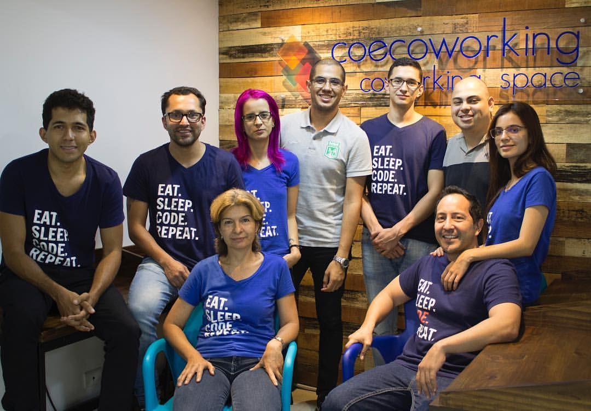

- 


Personal Profile
I’m someone that believe that good products and projects are a mix of Art and Tech. and this can only be achieved with discipline, dedication and a passion that burns you.
working in several personal and professional projects, i have encounter myself working with and leading great teams with amazing results. Not everything has been easy but with a good mental attitude and structure we made it. Thanks to those works project management has integrated as part as my way of work. I feel great passion working with multidisciplinary teams and creating this useful for people and companies. I’am very energetic, honest, and loyal and focus into practical and elegant solutions.
I will like to find a place that allow me to learn and grow as project manager and developer. Check my resume.
Skills and education
Electronic engineer Bachelor - University San Buenaventura 2011I'm an electronic engineer with experience in Telecommunication, I can build projects and products (hardware and software) for many fields. from public lighting to microwaves solutions. |
Project Manager - University Pontificia Bolivariana 2013I'm project management specialist, i can apply strong and robust Frameworks like PMI standard or agile methodologies like SCRUM to several sizes and types of projects. |
|---|---|
MAKEITREAL BOOTCAMP 2017Code learning bootcamp. For twelve weeks I learned WEB applications development based on RubyOnRails as main framework but working with different technologies like HTML5, CSS3, Javascript, Ruby, MySQL, Postgres, GitHub. I also learned a little about responsive design, testing and deploying. |
SKills |
Projects and expirience
EPM - electronic engineer contractor 2012-2014In this work, a team and I developed several inter disciplinary projects: Also I was involved in the development and project management process of the Christmas lighting project of Medellin 2013-2014. This process was under the PMI technics. His objective was to develop a integrate system material, factory management And montage process. |
CATHAY Led- project manager 2015-2017In this company I develop several projects with solar energy, lighting and Public lighting. For private companies. I was project manager, my job was to assure that all the parts involve Obtain the result that they expected. Related with payment, time and product Quality. Some clients were: Mall Monterrey, Pactia Conconreto, Edemco, Edemsa, and Epsa APPS.CO Finding Business -Businessdeveloper 2017 jun- septemberthis is a program from the goverment to discover new business ideas. for 3 months a team participate developing several ideas. a great place to learn the basis of fintech at Colombia |
|---|
Contact |
|---|
E-mail: ing.juandavid.alvarez@gmail.com |
cell phone : (+57)317-309-93-35 |
Skype : jdalvarezbeta |
Medellín-Colmbia |